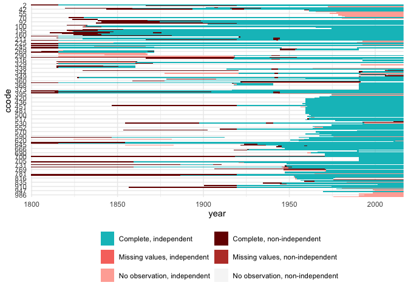

states


Create country-year/month/day panels consistent with the COW or Gleditsch & Ward lists of independent states. I mainly use this for merging different data sources:
- Create a master template that reflects one of the independent states lists.
- For each data source, normalize to a copy of the master template. Doing this by source makes it easier to identify and address issues like missing values or observation for non-independent states.
- In the end, merge everything together. Since all the inputs are already normalized to a proper state panel list, there should be no issues.
What the package does:
-
It contains the Gleditsch and Ward (G\&W) as well as the Correlates of War (COW) state system membership lists.
Search them with
sfind, this can be helpful for manual coding:sfind(260)[, 1:6] #> list ccode code3c country_name start end #> 45 GW 260 GFR German Federal Republic 1949-09-21 9999-12-31 #> 299 COW 260 GFR German Federal Republic 1955-05-05 1990-10-02 sfind("German")[, 1:6] #> list ccode code3c country_name start end #> 44 GW 255 GMY Germany (Prussia) 1816-01-01 1945-05-07 #> 45 GW 260 GFR German Federal Republic 1949-09-21 9999-12-31 #> 46 GW 265 GDR German Democratic Republic 1949-10-05 1990-10-02 #> 297 COW 255 GMY Germany 1816-01-01 1945-05-08 #> 298 COW 255 GMY Germany 1990-10-03 2016-12-31 #> 299 COW 260 GFR German Federal Republic 1955-05-05 1990-10-02 #> 300 COW 265 GDR German Democratic Republic 1954-03-25 1990-10-02 -
You can use it to build a country-year template that matches either the COW or G\&W state lists.
-
Visualize missing/non-independent cases in your data. See this related blog post for more details.
data("polity") str(polity) #> 'data.frame': 17228 obs. of 3 variables: #> $ ccode : num 700 700 700 700 700 700 700 700 700 700 ... #> $ year : num 1800 1801 1802 1803 1804 ... #> $ polity: num -6 -6 -6 -6 -6 -6 -6 -6 -6 -6 ... polity$date <- as.Date(paste0(polity$year, "-12-31")) plot_missing(polity, "polity", "ccode", "date", "year", statelist = "COW")
Citations
For the Gleditsch and Ward (G\&W) state data:
Gleditsch, Kristian S. & Michael D. Ward. 1999. “Interstate System Membership: A Revised List of the Independent States since 1816.” International Interactions 25: 393-413.
For the Correlates of War (COW) state data:
Correlates of War Project. 2017. “State System Membership List, v2016.” Online, http://correlatesofwar.org